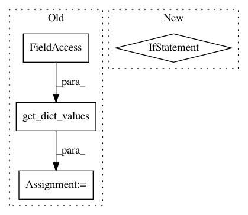

692daff32acea57c32fe191b785ce2c85dab4bb6,Tars/distributions/distribution_models.py,DistributionModel,log_likelihood,#DistributionModel#Any#,84
Before Change
raise ValueError("Input"s keys are not valid.")
if self.dist:
x_targets = get_dict_values(x, self.var)
log_like = self.dist.log_prob(*x_targets)
else:
x_inputs = get_dict_values(x, self.cond_var)
After Change
if not set(list(x.keys())) == set(self.cond_var + self.var):
raise ValueError("Input"s keys are not valid.")
if len(self.cond_var) > 0: // conditional distribution
x_inputs = get_dict_values(x, self.cond_var)
params = self.forward(*x_inputs)
self._set_dist(params)
x_targets = get_dict_values(x, self.var)
log_like = self.dist.log_prob(*x_targets)
return mean_sum_samples(log_like)
In pattern: SUPERPATTERN
Frequency: 3
Non-data size: 4
Instances
Project Name: masa-su/pixyz
Commit Name: 692daff32acea57c32fe191b785ce2c85dab4bb6
Time: 2018-06-20
Author: masa@weblab.t.u-tokyo.ac.jp
File Name: Tars/distributions/distribution_models.py
Class Name: DistributionModel
Method Name: log_likelihood
Project Name: masa-su/pixyz
Commit Name: f65dcae9367bc5a4355657026570af761c606382
Time: 2019-01-27
Author: masa@weblab.t.u-tokyo.ac.jp
File Name: pixyz/distributions/distributions.py
Class Name: MultiplyDistribution
Method Name: sample
Project Name: masa-su/pixyz
Commit Name: 30028c6256de0cef715095e3994e396025c068d4
Time: 2020-05-04
Author: kaneko@weblab.t.u-tokyo.ac.jp
File Name: pixyz/distributions/flow_distribution.py
Class Name: InverseTransformedDistribution
Method Name: sample